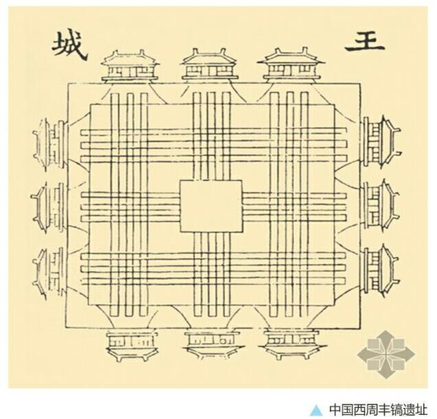
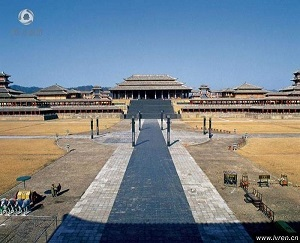
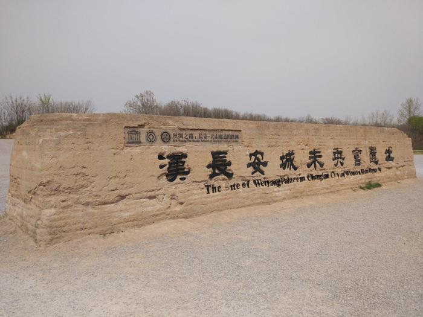

100万年前，蓝田人在这里建立了聚落。
蓝田猿人
7000年前，这里成了仰韶文化的发源地。
仰韶文化-陶器
3000年前，周朝在丰镐双子城建都，这里成为中国最早的城市。
丰镐双子城
2000年前，秦朝在咸阳建都，这里成为世界上最大最繁华的城市之一。
咸阳宫局部复原图
秦末汉初，长安其地时为秦都咸阳的一个乡聚，是秦始皇的兄弟长安君的封地，因此被称为“长安”。
汉初，高祖刘邦下诏，相国萧何主持在这里营造都城长安，这里第一次以“长安”为名登上历史舞台……
想知道先秦时代的长安最豪华的建筑是什么吗？诸君且看《阿房宫赋》~
六王毕，四海一；蜀山兀，阿房出。覆压三百余里，隔离天日。骊山北构而西折，直走咸阳。二川溶溶，流入宫墙。五步一楼，十步一阁；廊腰缦回，檐牙高啄；各抱地势，钩心斗角。盘盘焉，囷囷焉，蜂房水涡，矗不知乎几千万落！长桥卧波，未云何龙？複道行空，不霁何虹？高低冥迷，不知西东。歌台暖响，春光融融；舞殿冷袖，风雨凄凄。一日之内，一宫之间，而气候不齐
――《阿房宫赋》
萧何主持营造都城长安城
未央宫遗址
“关中左崤函，右陇蜀，沃野千里，此所谓金城千里，天府之国也”——张良（《史记·留侯世家》）
建造城墙
西安城墙
设京兆尹治理长安，对长安城进行了大规模扩建，兴建北宫、桂宫和明光宫，并在城西扩充了上林苑，开凿昆明池，建建章宫等。
“终始灞浐、出入泾渭。沣镐涝潏，纡馀委蛇，经营乎其内。荡荡乎八川，分流相背而异态。东西南北，驰骛往来。” ――司马相如《上林赋》
张骞出使西域，开通商道，长安城成为连接欧亚的桥梁、“丝绸之路”的起点，繁盛一时。
丝绸之路
此时长安城中有8.8万户，24.6万人，成为中国历史上第一座规模庞大、居民众多的城市。
汉长安城
汉长安城位于今西安市区西北郊外，面积约36平方公里，大约是同时期罗马城的四倍。长安城有12座城门和8条主要街道，最长的街道长5500米。城内的宫殿、贵族宅第、官署和宗庙等建筑约占全城面积的三分之二。宫殿集中在城市的中部和南部，有长乐宫未央宫、桂宫、北宫和明光宫等。其中未央宫是从汉惠帝开始的许多皇帝的居住和处理朝政的地方，是中国历史上最有名的宫殿之一。居民区分布在城北，划分为160个“闾里”。市场在城市的西北角上，称为“长安九市”。在城西有面积广大的上林苑，苑内主要有昆明池、建章宫等。在城南有一组王莽时期建造的礼制建筑。<汉长安城一改战国时期大小城相套的格局，把居民区、工商业区和宫殿区集中在一座城<市里，后世的都城都沿用了这一构建体系统。
是要三千繁华锦绣长安，还是要伊人如玉温柔似水？世间美人如名将，不叫人间见白头……
北方有佳人，绝世而独立。
一顾倾人城，再顾倾人国。
宁不知倾城与倾国，佳人难再得。
――李延年
网页设计制作@长安一片月